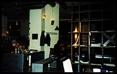
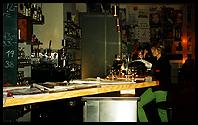
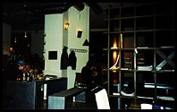
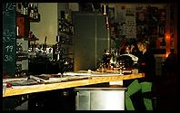
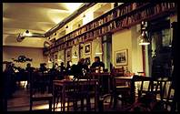

{kind=link}
 



 I wasn't expecting to find one of these here - The Vienna Globe is a modern cafe-book shop that even has a sofa just for me. The cafe is a big open space with reasonable furniture, but is slightly lacking in ambiance. The decor isn't very well done come to that - it's all a bit thrown together. Perhaps it's supposed to look like a random selection of furniture, but that's probably impossible to do in a new cafe with new furniture.
The book shop bit, in one corner, has a smallish selection of English books - bestsellers mostly, nothing very intellectual. I rather get the impression that you're not supposed to take a book to read at your table while drinking coffee, and then maybe put it back instead of buying it, which rather defeats the point of it all. The last time I went into Borders in England there was a sign by the till that suggested that you do just that.
Das Möbel, Burggasse (1070)A few steps up the road is Das Möbel, which is much more interesting. It's one of those cafe-bars that has an art collection on display, with hefty price tags. The difference here, is that the furniture is the art, as well as the stuff on the walls. It's all rather fun, and several of the chairs are positively weird.
Surprisingly, given the style of the place, the atmosphere is very laid back and doesn't seem at all pretentious. However, my chosen bit of furniture doesn't really want me to stay for more than just the one drink.
Heading across the road, in the direction of Mariahilferstrasse, we are in the middle of the area called Spittelberg. It's like a quieter and more civilised version of the 'Bermuda Triangle' with the same kind of narrow cobbled streets. The buildings are prettier here, though, and more expensive to live in, and the selection of interesting looking cafes and bars look more the quiet type.
Europa, ZollergasseSince I'm in the area, I'll pop into Europa again.
{kind=link}
{kind=link}